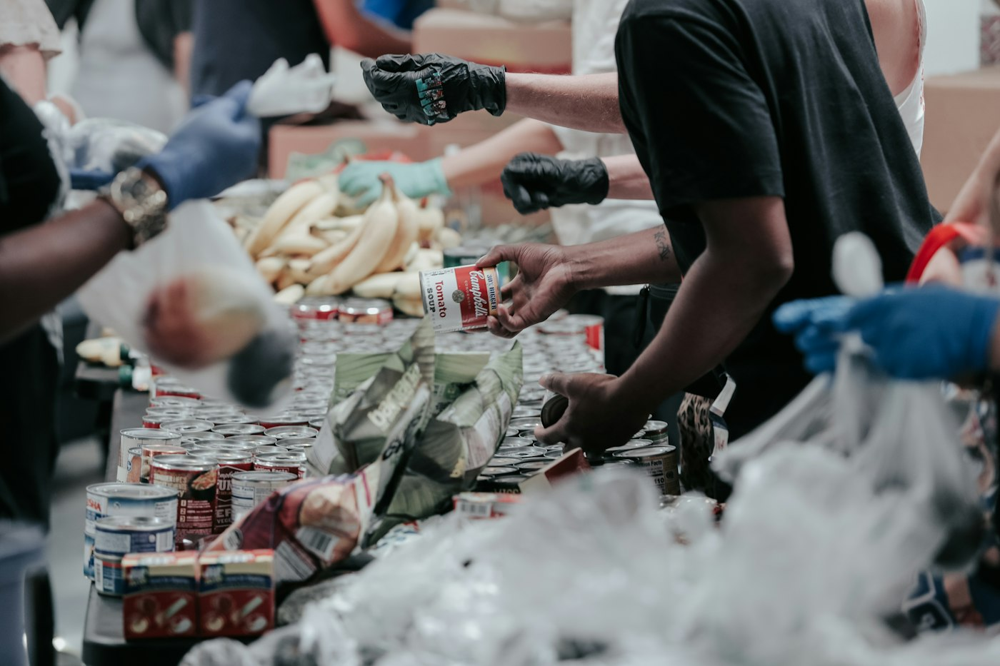

Understanding the need
Time to listen, understand someone’s situation, and explore available options.
Give to Aid Room
Your support helps people in crisis connect with essential resources, compassionate guidance, and consistent follow-up.

More than a referral
Finding help is one step. Reaching it can be another.
Transportation, identification, applications, waitlists, and limited phone access can stand between someone and the support they need. Aid Room works alongside people to understand their options, connect with community partners, and keep moving forward.
A compassionate conversation, a trusted connection, and clear guidance can reduce isolation and help restore dignity and hope.
The work you support
Time to listen, understand someone’s situation, and explore available options.
Help making sense of programs, applications, and the steps involved in accessing support.
Follow-up to address barriers and identify additional resources as needs change.

Give online
Support Aid Room with a secure donation through Zeffy.
Donate NowRecurring gifts support ongoing work. Review the frequency and cancellation terms with your donation provider.
Other ways to help
Share your time and experience. Explore volunteer opportunities.
Build connections that strengthen support. Contact us about a partnership.
Help meet current needs. Ask about needed supplies.
Our organization
Aid Room, Inc. is a recognized tax-exempt 501(c)(3) organization, EIN 41-2818999. Contributions are tax-deductible to the extent allowed by law. No goods or services are provided in exchange unless stated on your receipt.